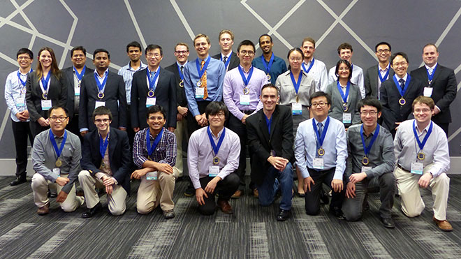

History
TechCon began as a small regional meetup in 2015, founded by a group of tech enthusiasts aiming to bridge innovation with community learning. Held annually, the event quickly gained traction for its hands-on workshops, keynote speakers, and open panels.
By 2018, TechCon had evolved into a recognized platform for showcasing emerging technologies in AI, web development, cybersecurity, and more. During the pandemic, it adapted to a virtual format, broadening its global reach. Today, TechCon stands as a dynamic conference that connects professionals, students, and creators to share knowledge, demo products, and spark collaborations.
